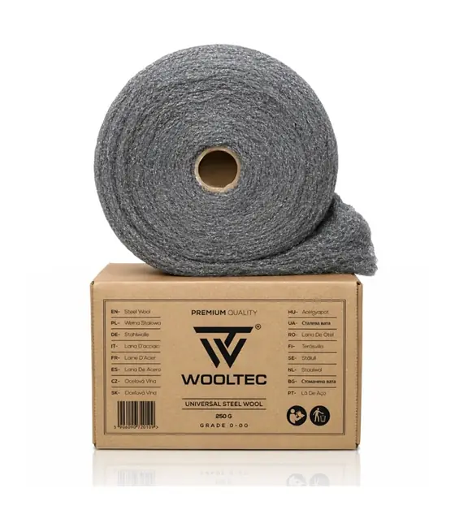
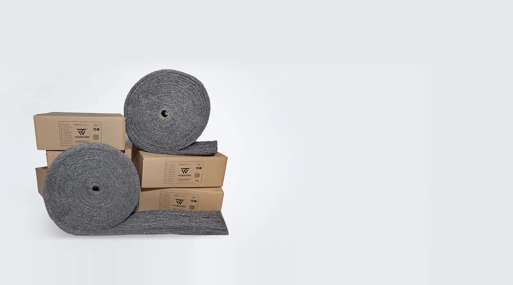
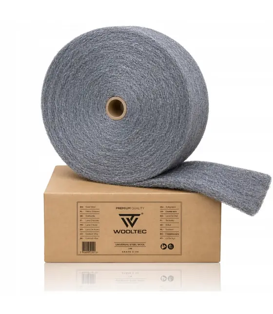
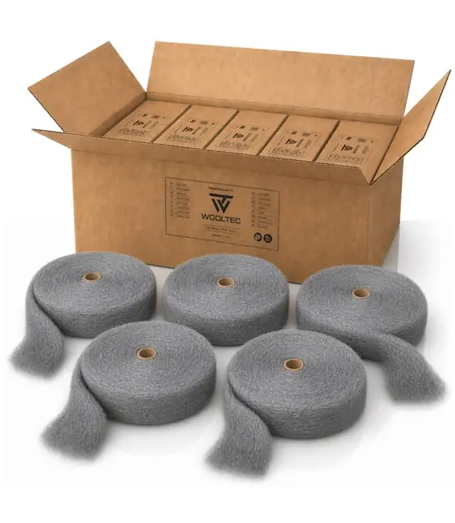
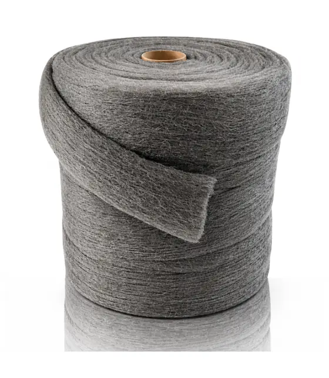
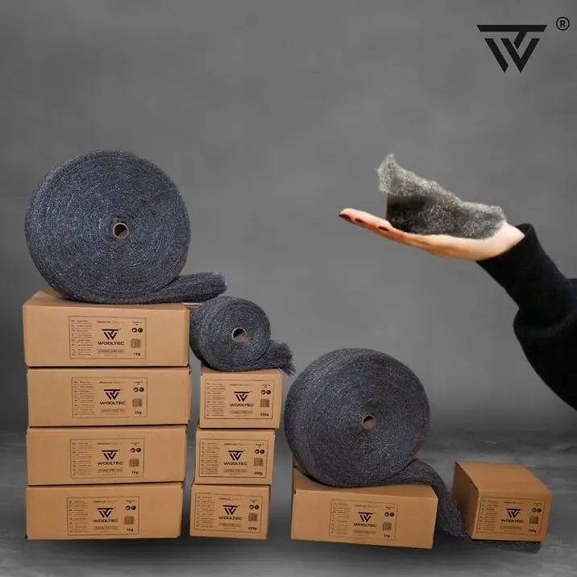

Rolka 250 g
2-2,5 m wełny, kompaktowy format do mieszkania i drobnych renowacji.
13,95 zł55,80 zł/kg
Kup teraz
Polska wełna stalowa gradacji 0+00 w rolkach od 250 g do 10 kg. Delikatny nacisk poleruje na połysk, mocniejszy usuwa rdzę i zabrudzenia.
Wybierz rolkęZamów do 14:00 - jutro u Ciebie. Darmowa dostawa Orlen Paczką od 65 zł.
Odcinasz nożyczkami tyle wełny, ile potrzebujesz, a przy każdym cięciu ostrzysz ostrza. Ta sama rolka sprawdzi się w kuchni, garażu, warsztacie i na cmentarzu.
Chrom, aluminium, mosiądz, miedź, stal nierdzewna. Klamki, garnki, sztućce, narzędzia.
Zdejmowanie starych lakierów i bejc, wygładzanie, przygotowanie pod nową powłokę.
Mech i naloty atmosferyczne na granicie, marmurze i lastryku.
Przypalony tłuszcz i nagar na rusztach i blachach.
Fizyczna bariera w szczelinach i przy rurach, trudna do przegryzienia.
Utlenienia i ślady hamulcowe na alufelgach.
Aluminium i chrom: końcówki wydechu, lagi, osłony.
Rama, kierownica i chromowane elementy.
Rolka Wooltec łączy dwie gradacje, dlatego jedną wełną zarówno czyścisz, jak i polerujesz.
Delikatny nacisk to polerowanie. Mocniejszy nacisk to czyszczenie.
Wełna stalowa jest łatwopalnaPrzechowuj ją z dala od ognia. Do tłumików i zastosowań wysokotemperaturowych wybierz wełnę nierdzewną gradacji 1.
Wszystkie w gradacji 0+00, w kartonie zamykanym papierową taśmą. Im większa rolka, tym niższa cena za kilogram.

2-2,5 m wełny, kompaktowy format do mieszkania i drobnych renowacji.

9-10 m wełny w jednej rolce. Najpopularniejszy wariant do domu, garażu i ogrodu.

5 rolek po 1 kg, łącznie 45-50 m. Zapas na sezon dla warsztatu i kamieniarza.

90-100 m w jednej dużej rolce, najniższa cena za kilogram w ofercie.

Wełna Wooltec to stal w najczystszej postaci, bez chemii, więc i opakowanie jest bez plastiku.
Kamieniarze, firmy DDD, warsztaty i serwisy biorą rolki 5 i 10 kg: jeden zakup na miesiące intensywnej pracy, faktura VAT i stała dostępność. Dystrybutorom i hurtowniom oferujemy osobne warunki współpracy.
Zapytaj o współpracęProfesjonalna obsługa sklepu. Paczka porządnie spakowana. Produkt przyszedł w stanie idealnym. Dobry sklep, sprawdzone produkty bez ściemy i naciągania klienta.Marek, 01.09.2026
Nie mam uwag, realizacja zamówienia była bardzo sprawna. Widać, że dbają o relację ze swoimi klientami, bardzo mi się to podoba.Konrad, 14.07.2026
Wszystko ok, towar zgodny z tym co zamawiałem. Na zdecydowany plus bardzo szybka realizacja zamówienia.Krzysztof, 28.07.2026
Jak dobrać gradację, zabezpieczyć dom przed myszami bez trucizn i polerować metal bez rys.